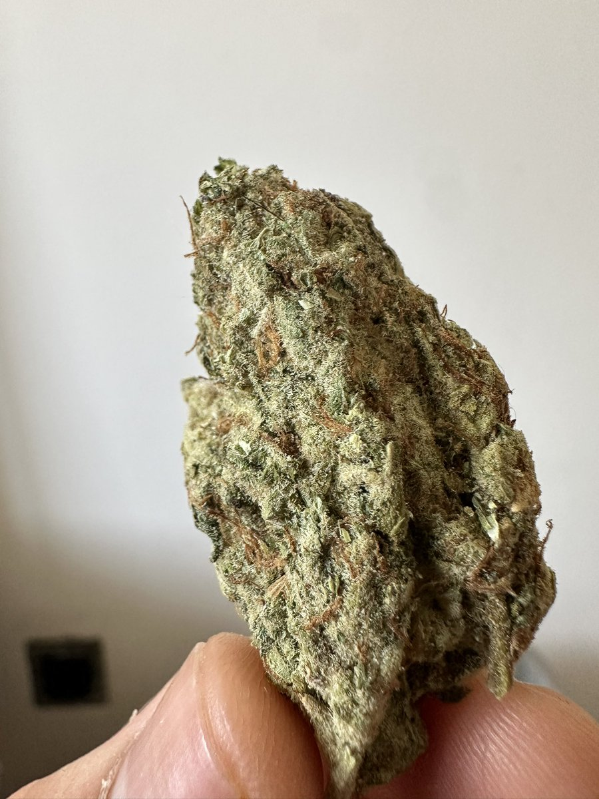
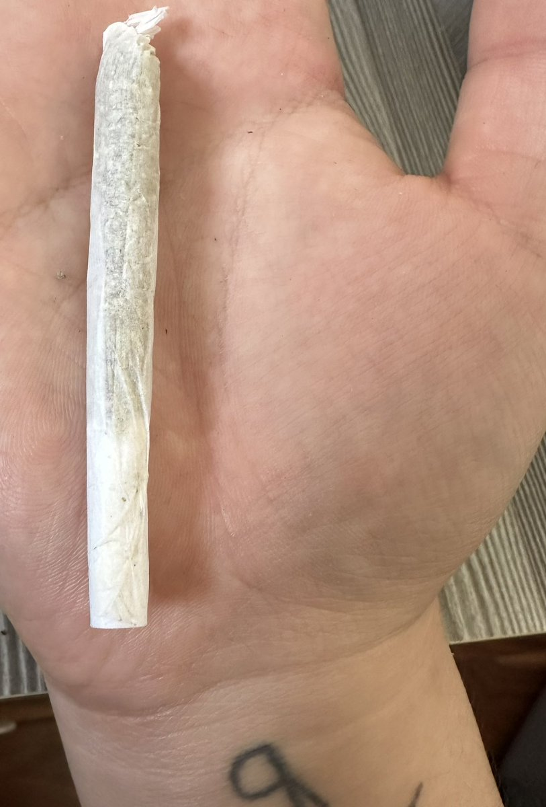

山本殺し（二世互fo寻回版）
@cVPrL20wIa42392
@godspeedyou50 很心疼！也很抽象老大😗


Jahseh
@godspeedyou50
420快乐 朋友们
今天的笑话是我美美的卷了一根松散的Joint边抽边拉屎，我大的对我的肛门它失去了知觉，我不知道我到底拉了多少屎我只是觉得我一直在拉，直到以为我把我屁眼都拉的脱肛了以后我摸了它一下，它奖励我一手屎，所幸旁边有淋浴喷头和水龙头，赌了一下，淋了一身但也洗了手，擦了很久屁股。 https://t.co/s9RMAh6Qgq